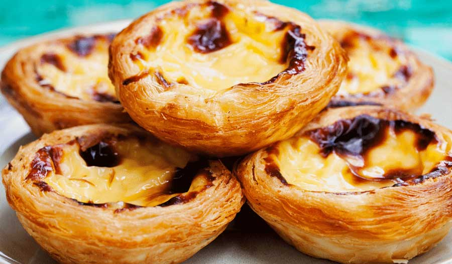
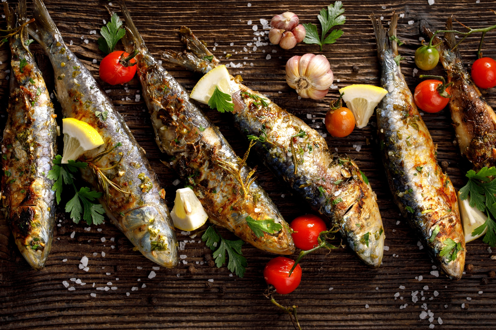

Pastel de nata or pastel de Belém is a Portuguese egg custard tart pastry, optionally dusted with cinnamon.

Sardinhas assadas are classic charcoal grilled sardines that is traditional food in Portugal. They are very popular during summer festival.
The best way to explore the Portuguese love of bacalhau: eat it! You’ll find at least one bacalhau dish on every restaurant menu in Portugal.